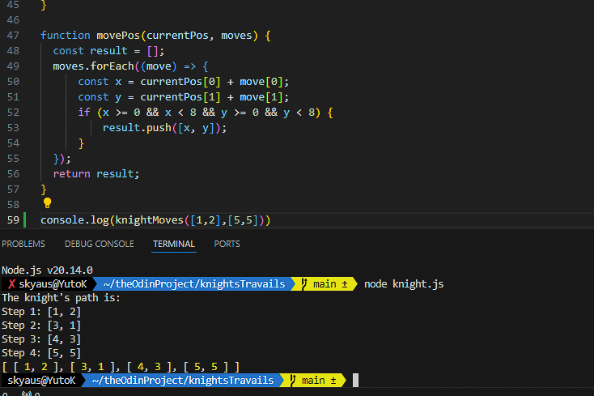

Built an algorithm to solve the shortest-path problem for a
knight’s movements on a chessboard using search algorithms in
JavaScript. This project leverages core algorithmic principles,
particularly graph traversal, and applies Depth-First Search (DFS)
and Breadth-First Search (BFS) to find optimal paths.